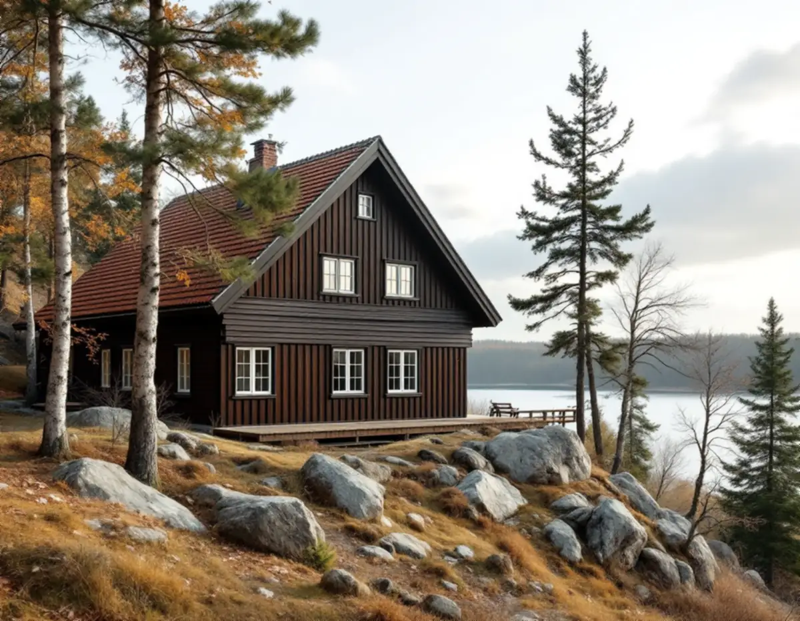
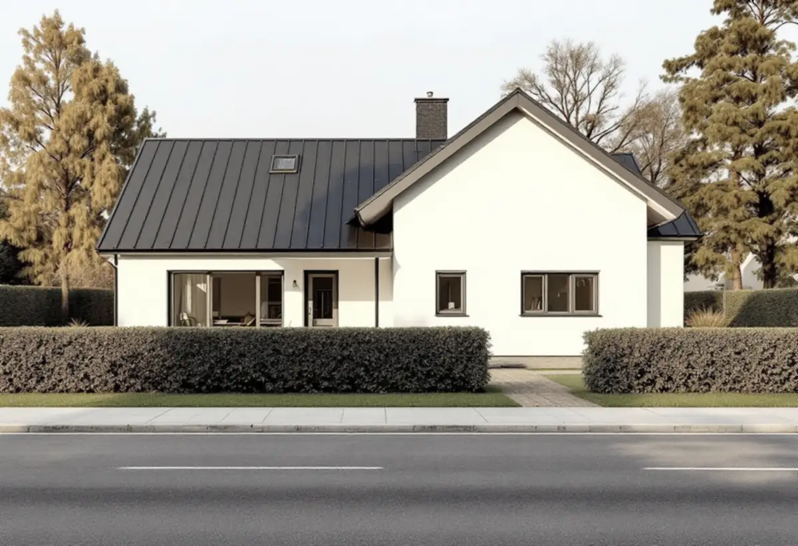

Epok och karaktär
Vi bestämmer vilken tid huset hör till och vad kulturmiljöprogrammet säger om området.
I Botkyrka finns villatak från alla 1900-talets decennier. I Tullinge och Uttran står nationalromantiska villor med branta tak av enkupigt lertegel, egnahem från 1920-talet och funkisvillor med flacka sadeltak, och i Tumba radhus från 1960-talet. Takrenoveringen anpassas efter epoken, och kulturmiljöprogrammet ger vägledning om hur.

Enligt SCB fanns det 12 555 bostäder i småhus i Botkyrka 2024. Kommunens kulturmiljöprogram, antaget av kommunfullmäktige 2014, förklarar varför många av dem ligger där de ligger. Västra stambanan byggdes ut på 1860-talet, och kring sekelskiftet växte renodlade villaområden fram längs järnvägen. Tullinge station öppnade 1903 och Uttran fick sin station 1908.
Den tidiga exploateringen i Tullinge sköttes av Tullinge AB, och målgruppen var främst de mer välbärgade. På 1920-talet planlades Hamra egnahem söder om järnvägen för tjänstemän och arbetare på Separator, samtidigt som Tullinge Parkhem och Norra Tullinge Lanthem byggdes ut norr om spåret.

Programmet beskriver villorna från 1900–1910-talen som nationalromantiska, med branta takfall, enkupigt lertegel, liggande fasadpanel och småspröjsade fönster. De står ofta på höjder i landskapet, på stora tomter vid Tullingesjöns västra sida och på bergskrönet söder om järnvägen.
På 1920-talet kom kataloghusen, monteringsfärdiga hus som köptes direkt från en leverantör. Boros villa Björkhamra blev populär i egnahemsområdet. Under 1930- och 40-talen dominerade funkisvillan med slätputsade fasader och flacka sadeltak, och på 1950-talet kom Folkvillan och Tjänstemannavillan.
Uttran, som började bebyggas när stationen öppnade 1908, beskrivs i programmet som en brokig blandning av villor från 1910-talet ända fram till 2010-talet. På 1950-talet blev friare planformer och blandade fasadmaterial vanliga, och på 1960–70-talen byggdes gruppbyggda områden med likadana villor på små tomter. Där ligger ofta flera tak av samma ålder bredvid varandra.
Varje epok har sitt tak. Det branta lertegeltaket tål mycket men har läkt och papp som ofta är slut, medan det flacka funkistaket är känsligare för vatten som blir stående. Därför bedömer vi först vilken tid huset hör till innan vi föreslår material och metod.
För Tullinge villaområde och för Uttran skriver kommunen att villor med bevarad ursprunglig karaktär ska värnas. Ändringar ska göras med respekt för huvudbyggnadens karaktärsdrag, och fasader, tak, fönster, entréer och balkonger ska ges en tidstypisk utformning. Tillbyggnader ska underordnas huvudbyggnaden.
Programmet konstaterar också att Tullinge är en brokig miljö som har förändrats mycket de senaste decennierna, men att grundstrukturen i gator och tomter finns kvar. Ett brant tak med rött enkupigt tegel på en sekelskiftesvilla är alltså något kommunen vill se kvar. Är teglet hållbart lägger vi tillbaka det på nytt underlag och kompletterar med pannor av samma typ.
Lovplikten är en annan fråga. Botkyrka kommun skriver att reglerna från 1 december 2025 både ger lättnader och skärpta krav, och att fler åtgärder kräver lov i särskilt värdefulla områden. För ett vanligt en- eller tvåbostadshus är byte av takmaterial normalt lovfritt, enligt Boverket. Mer under bygglov vid takbyte.
Efter kriget var bostadsbristen stor, och Segersjö blev det största bostadsområdet som byggdes i kommunen under 1950-talet. I Tuna, som planerades under sent 1950-tal och byggdes ut i början av 1960-talet, lyfter programmet fram radhusområdet söder om Lindhovsvägen för sin höga arkitektoniska kvalitet, med geometriska former som förstärks av de tidstypiska takformerna.
I sådana grupper är det helheten som är värdet. Programmet säger att radhusens tidstypiska karaktär ska värnas och det enkla formspråket respekteras. Lägger en granne om sitt tak bör det se ut som de andra, och ännu bättre är det om flera hus i längan gör det samtidigt. Läs mer om tegel, betong och plåt och om takläggare i Botkyrka.
Vi bestämmer vilken tid huset hör till och vad kulturmiljöprogrammet säger om området.
Papp, läkt och råspont undersöks, och skadad råspont märks ut för byte.
Hela pannor sparas för att läggas tillbaka, trasiga ersätts med samma typ.
Ny underlagspapp och läkt läggs, anpassade efter takets lutning.
Plåt vid skorsten, nock och takfot utformas så att de passar husets epok.
Rännor och stuprör ses över och vi går igenom resultatet med dig.
Rotavdraget är 30 procent av arbetskostnaden. Varje ägare kan få högst 50 000 kr per år, och tillsammans med rutavdrag är gränsen 75 000 kr. Material och resekostnader ger inget avdrag. Vi drar av det direkt på fakturan, enligt Skatteverket.
Äger ni huset tillsammans har var och en sitt eget utrymme för avdrag, och det kan fördelas efter hur ni betalar. Mer om detta under rotavdrag för takarbete.
I Botkyrka påverkas kostnaden av hur stor del av det gamla teglet som går att lägga tillbaka, om råsponten behöver bytas, hur brant och stort taket är och hur mycket plåt som ska göras om. På radhus spelar det också roll om flera hus görs samtidigt. Läs mer om vad en takrenovering kostar eller räkna på ditt tak i kalkylatorn för takbyte.
Takbyte, besiktning och plåtarbeten.
Takläggare i Botkyrka →Så fungerar en omläggning.
Takrenovering och takomläggning →Det här styr priset.
Vad kostar en takrenovering? →Räkna på takytan och ROT.
Takbyte-kalkylator →Stuvsta, Snättringe och Skogås.
Takrenovering i Huddinge →Mälaren, Järna och Pershagen.
Takrenovering i Södertälje →Långbro, Herrängen och Långsjö.
Takrenovering i Älvsjö →